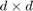

PowerICA
Contents
Introduction
PowerICA is a numerically stable ICA algorithm, which is especially useful when the sample size is not orders of magnitude larger than the data dimensionality [1]. This is the finite-sample regime in which the fixed-point FastICA algorithm [2] is often reported to have convergence problems [3].
How to cite
This function is implemented based on Algorithm 1 in paper below.
S. Basiri, E. Ollila and V. Koivunen, "Alternative Derivation of FastICA With Novel Power Iteration Algorithm," in IEEE Signal Processing Letters, vol. 24, no. 9, pp. 1378-1382, Sept. 2017.
If you use this function in your publication please cite our paper using the above citation info.
Syntax
[ W , flg] = PowerICA( X , nonlin, W0 , mode)
Description
Input parameters:
- X : is a real valued
 array of mixture recordings, where
array of mixture recordings, where  and
and  denote the dimensionality and the number of observations respectively. Data X should be centered and whitened.
denote the dimensionality and the number of observations respectively. Data X should be centered and whitened. - nonlin: ICA nonlinearities. It can be either a single string or a array of strings. The following nonlinearities are supported. tanh, pow3, gaus, skew, rt06, lt06, bt00, bt02, bt06, bt10, bt12, bt14, bt16, tan1, tan2, tan3, tan4, gau1, gau2, gau3. We refer the reader to [4] for detailed description of the other nonlinearities besides the standard ones ( tanh, gaus, pow3, skew ). The default value is tanh .
- W0 : is an orthogonal  matrix used as the initial start of the algorithm.
- mode: can be set either to serial or parallel . The serial mode is used when only one computing node is available or the dataset is of small size. The default mode is serial . The parallel mode runs two parallel Matlab instances on different CPU cores. The two instances communicate via a Java socket. Make sure you have installed and updated Java on your system.
Note: In order to use the parallel mode in MacOS, line 81 of the PowerICA function should be edited according to your installed Matlab version. For example: !/Applications/MATLAB R2017a.app/bin/matlab -r parnode &
Output parameters:
- W: PowerICA estimate of orthogonal demixing matrix.
- flg: Returns 1, when the algorithm has converged successfully and 0 when the algorithm has failed to converge.
Example
This is a synthetic example of utilizing the PowerICA method in extracting independent source signals from their observed mixture recordings.
Initialize:
d = 4; %number of ICs p = 5; %number of mixture recordings n = 500; %sample size
Generate the data:
A = randn(p,d); %random mixing matrix % Generate a 4-by-n array of source signals (independent components) S = demosig; % Generate a random p-by-n mixture array Y = A*S;
Center the data:
Y = bsxfun(@minus, Y, mean(Y,2));
Whiten the data:
[E,D] = eig(cov(Y',1)); % EVD of sample covariance [Ds,ord] = sort( diag(D),'descend') ; %% Sort by decreasing variance E = E(:,ord(1:d)); % E contains d largest eigenvectors lam = Ds(1:d); % vector of d largest eigenvalues whiteningMatrix = diag(1./sqrt(lam))*E(:,1:d)'; dewhiteningMatrix = E(:,1:d) *diag(sqrt(lam)); X = whiteningMatrix*Y;
Use the PowerICA algorithm to estimate the demixing matrix W:
W0 = orth(randn(d,d)); % random initial start [W_est , flg] = PowerICA(X, 'tanh', W0, 'serial');
PowerICA estimate of the ICs:
S_est = W_est*X;
PowerICA estimate of A (up to sign and permutation ambiguities):
A_est = dewhiteningMatrix*W_est';
fprintf('The powerICA estimate of A is\n');
display(A_est);
The powerICA estimate of A is
A_est =
1.9495 0.0912 1.1859 1.1474
0.4115 -2.0449 0.2420 0.5074
0.8622 0.8588 2.3597 0.9446
0.7731 0.4109 2.8135 0.7917
1.1223 -1.1851 0.1133 -0.3780
Plotting the source signals (independent components):
figure; subplot(4,1,1);plot(S(1,:));ylabel('IC#1'); title('Source signals (independent components)'); subplot(4,1,2);plot(S(2,:));ylabel('IC#2'); subplot(4,1,3);plot(S(3,:));ylabel('IC#3'); subplot(4,1,4);plot(S(4,:));ylabel('IC#4');
Plotting the mixture recordings:
figure; for i = 1:p subplot(p,1,i);plot(Y(i,:));ylabel(['MIX#' num2str(i)]); if i == 1, title('Observed mixtures');end end
Plotting the PowerICA estimate of source signals (independent components) find the order of extraction:
W = (whiteningMatrix*A)'; [~, ord]=max(abs(W_est/W),[],2); figure; subplot(4,1,1);plot(S_est(1,:));ylabel(['IC#' num2str(ord(1))]); title('PowerICA estimate of source signals'); subplot(4,1,2);plot(S_est(2,:));ylabel(['IC#' num2str(ord(2))]) subplot(4,1,3);plot(S_est(3,:));ylabel(['IC#' num2str(ord(3))]) subplot(4,1,4);plot(S_est(4,:));ylabel(['IC#' num2str(ord(4))]);
References
[1] S. Basiri, E. Ollila, and V. Koivunen, "Alternative derivation of FastICA with novel power iteration algorithm," IEEE Signal Processing Letters, vol. 24, no. 9, pp. 1378-1382, Sept 2017.
[2] A. Hyvarinen and E. Oja, "A fast fixed-point algorithm for independent component analysis," Neural Computation, vol. 9, pp. 1483-1492, 1997.
[3] P. Tichavsky, Z. Koldovsky, and E. Oja, "Performance analysis of the FastICA algorithm and Cramer-Rao bounds for linear independent component analysis," IEEE Transactions on Signal Processing, vol. 54, no. 4, pp. 1189-1203, April 2006.
[4] J. Miettinen, K. Nordhausen, H. Oja, and S. Taskinen, "Deflation-based FastICA with adaptive choices of nonlinearities," IEEE Transactions on Signal Process- ing, vol. 62, no. 21, pp. 5716-5724, Nov 2014.